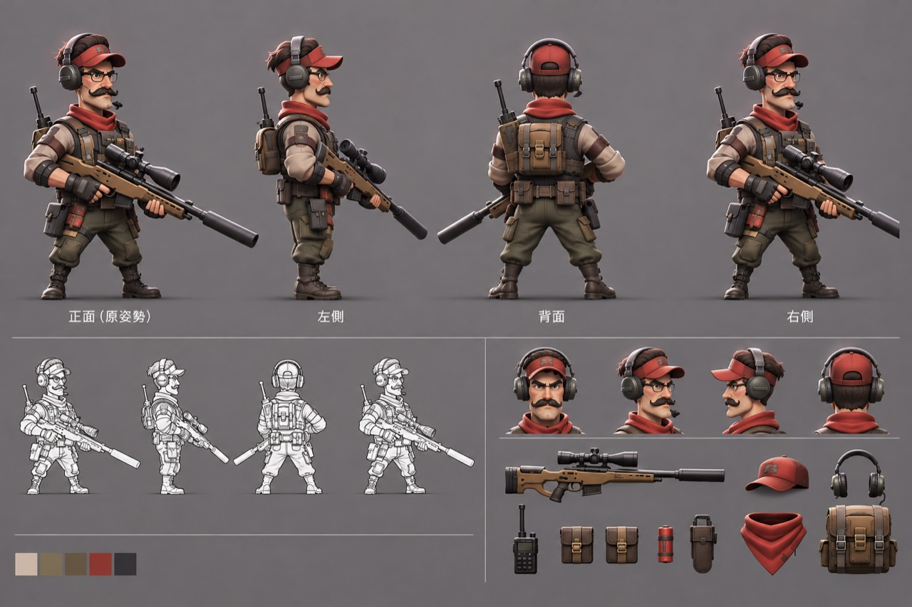

<!doctype html>
<html lang="zh-Hant">
<meta charset="utf-8">
<meta name="viewport" content="width=device-width, initial-scale=1">
<title>紅帽鬍子狙擊手</title>
<style>
  * { box-sizing: border-box; }
  body { margin: 0; background: #f8f4f2; color: #2c2526; font: 16px system-ui, sans-serif; }
  main { max-width: 1080px; margin: auto; padding: 18px; }
  h1 { margin: 0 0 12px; }
  .layout { display: grid; grid-template-columns: 1.5fr 1fr; gap: 16px; }
  [data-figure-stage] { background: #eee7e5; border-radius: 12px; height: clamp(465px, 71vh, 700px); }
  canvas { display: block; touch-action: none; }
  nav { display: flex; flex-wrap: wrap; gap: 8px; padding-top: 9px; }
  button { font: inherit; color: inherit; border: 1px solid #b8a6a7; background: #fff; border-radius: 6px; padding: 8px 12px; }
  button[aria-pressed="true"] { background: #422e30; color: #fff; }
  aside { display: grid; grid-template-columns: 1fr 1fr; gap: 8px; align-content: start; }
  aside img { width: 100%; display: block; border-radius: 6px; }
  @media (max-width: 690px) { .layout { grid-template-columns: 1fr; } }
</style>
<main>
  <h1>紅帽鬍子狙擊手</h1>
  <div class="layout">
    <section id="red-cap-marksman" aria-label="人物 3D 模型">
      <div data-figure-stage role="img" aria-label="可拖曳旋轉與縮放的全身人物"></div>
      <nav aria-label="模型視角">
        <button type="button" data-view="front" aria-pressed="true">主視角</button>
        <button type="button" data-view="side" aria-pressed="false">側面</button>
        <button type="button" data-view="rear" aria-pressed="false">背面</button>
        <button type="button" data-view="overhead" aria-pressed="false">俯視</button>
        <button type="button" data-view="portrait" aria-pressed="false">臉部</button>
      </nav>
    </section>
    <aside aria-label="參考照片">
      
      
    </aside>
  </div>
</main>
<script src="preview-runtime.js"></script>
</html>

